Основные факты о Бахрейне: климат, местонахождение, виза, перелет
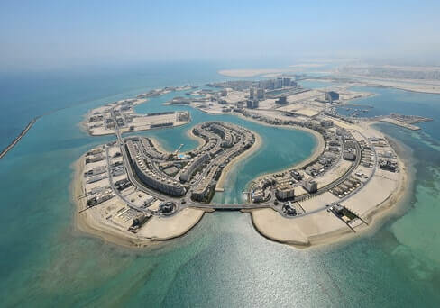
Королевство Бахрейн – это островное государство в Арабском заливе, формой правления которого является конституционная монархия. Бахрейн состоит из 33 островов, находящихся недалеко от Саудовской Аравии, с которой его соединяет 25-километровый мост. Современный Бахрейн является потомком древней шумерской цивилизации. Еще с древности остров славился жемчужным промыслом, и до сих пор его натуральный жемчуг считается одним из лучших в мире.
Бахрейн – идеальное место для посещения в любое время года, однако лучше всего туда отправиться в периоды с сентября по декабрь и с февраля по май.
- Зима: 15-26°C / Весна: 20-30°C / Лето: 28-40°C / Осень: 25-35°C
- Самым теплым месяцем является август. Температура может достигать более 40 градусов, что подходит тем туристам, которые любят очень жаркие страны. Самый холодный месяц-январь. Лучшие периоды для купания - с сентября по декабрь и с февраля по апрель.
Визу в Бахрейн можно получить по прибытии в страну или заранее, оформив ее на сайте или при помощи туроператора. Стоимость оформления туристической визы в аэропорту Бахрейна составит 5 бахрейнских динаров (около 15 долларов США).
Перелет из Москвы в Бахрейн занимает 4 часа и 50 минут. Прямые рейсы из Московского аэропорта Домодедово в Международный аэропорт Бахрейна ежедневно осуществляет авиакомпания Gulf Air. У авиакомпании Gulf Air и Управления по туризму Бахрейна разработан специальный BTEA тариф для клиентов туристических компаний. Он выгодно отличается от тарифов, которые вы найдете в интернете. Запрашивайте BTEA-тариф у Вашего туроператора!
Карта и транспорт
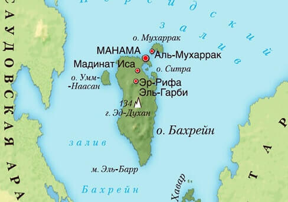Бахрейн – государство на архипелаге из 33 островов, крупнейший из которых имеет одноименное название. Бахрейн расположен недалеко от восточного побережья Саудовской Аравии в Арабском заливе.
Международный аэропорт Бахрейна (BAH), единственный аэропорт в стране, расположен на острове Мухаррак примерно в 7 километрах к северо-востоку от Манамы, столицы Бахрейна. Он является базовым аэропортом местной авиакомпании Gulf Air. Прямо в аэропорту на специальных стойках можно оформить аренду автомобиля. Находятся они в зоне прилета на первом этаже терминала. Прокат автомобиля предлагают такие компании, как Europcar, AVIS, Hertz, Sixt и др. С полным списком можно ознакомиться на сайте.
Вы также можете воспользоваться общественным транспортом. Городские автобусы красного цвета работают здесь 7 дней в неделю и проходят по всем дорогам страны. Расписание и маршруты автобусов указаны на сайте. Проездной билет можно приобрести у водителя. Еще одним способом передвижения является такси, которое можно поймать на улицах Бахрейна. Бахрейнское такси легко узнать по оранжево-белому или оранжево-золотому цвету. Однако можно встретить и арабское такси London Cabs, отличающееся своей клетчатой крышей. Обычно стоянки такси находятся возле торговых центров или крупных отелей. Подробная информация о такси Бахрейна. Также в Бахрейне работают приложения Uber и Careem, и этот способ передвижения – самый выгодный и удобный в Бахрейне.
Общественные пляжи Бахрейна
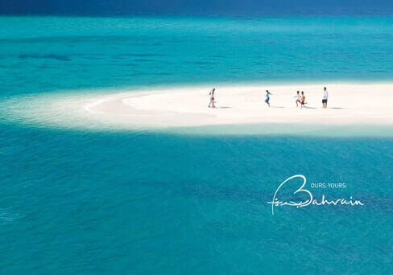Главная причина отправиться в Бахрейн – его солнечные пляжи. Любители поплавать будут рады узнать, что в Бахрейне есть как общественные, так и частные пляжи, где также можно заняться водными видами спорта, например, кайтсерфингом или паддлбордингом. Все они платные, но хорошо оборудованы. Вас ждут зонтики, шезлонги, душевые и кабинки для переодевания. Пологий вход в воду делает пляжи Бахрейна идеальными для семейного отдыха с детьми. На данный момент в Бахрейне есть 11 отелей, которым принадлежат пляжи первой линии, большинство из них принадлежат гостиничным цепочкам с мировым именем.
Пляж Marassi Beach (остров Амваж)
Один из самых популярных пляжей как у местных экспатов, так и у туристов, которые остановились в городских отелях. Общая длина береговой линии более 2 км, демократичная стоимость входа, 2 динара с человека. Бесплатно доступны лежаки, зонтики, открытый душ, раздевалка, за дополнительную плату - водные развлечения для всей семьи: банан, флайборд, надувной аквапарк, водные мотоциклы. Путь от большинства отелей Манамы займет 20 минут на такси, некоторые отели предоставляют шаттл до Марасси Бич бесплатно.
Острова Аль-Дар и Джарада
Пляжный курорт на острове Аль-Дар предлагает вам отправиться в морские глубины на поиски жемчуга и совершить круиз до острова Джарады (Jarada), где можно позагорать на белом песке и искупаться в чистых морских водах. Здесь обитает до 30 видов кораллов и более 200 видов рыб. Любоваться дельфинами и коралловыми рифами лучше всего на рассвете или закате.
Beach Culture на острове Амваж
Центр водного спорта The Natural Water Sports Centre, управляемый компанией Beach Culture и расположенный на острове Амваж, является единственным центром в Бахрейне, выдающим международные сертификаты для кайтсерфинга, SUP серфинга и йоги на воде. Вы можете записаться на курсы, выбрав начинающий или продвинутый уровень. Занятия проходят как индивидуально, так и в группе. Здесь можно заняться парусным спортом, виндсерфингом, каякингом и другими видами активного отдыха.
Частные пляжи Бахрейна
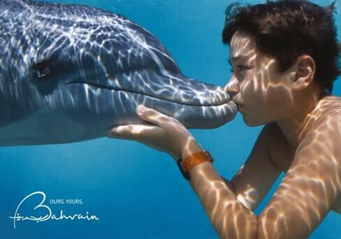Яхт-клуб Bahrain Yacht Club
Находящийся в Ситре пляж, который принадлежит бахрейнскому яхт-клубу, является одним из самых красивых пляжей на острове. Пляж отличается чистотой и наличием прекрасного ресторана. На пляж могут пройти только участники клуба, однако вы можете приобрести однодневный пропуск.
Пляжный курорт Bahrain Coral Bay
На курорте Bahrain Coral Bay, расположенном на восточном побережье Манамы, есть все, что нужно: пристань для яхт, пляж, развлекательные заведения, зона для водного спорта, роскошный SPA салон и фитнес центр, а также рестораны. По выходным на пляже собирается особенно много людей. Здесь есть несколько бассейнов, прокат гидроциклов, надувных бананов и каяков.
Остров Хавар
Любители дикой природы обязаны посетить остров Хавар, куда можно добраться за 45 минут, отправившись на пароме с пристани Аль-Дур Жетти (Al Dur Jetty). Архипелаг Хавар является заповедником дикой природы, который имеет международную важность. На местном пляже, сохранившем первозданный вид, вы можете понаблюдать за дельфинами и редкими птицами.
11 пляжных отелей Бахрейна
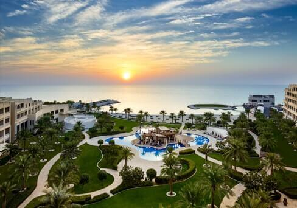Места для шопинга, семейного отдыха и развлечения для детей
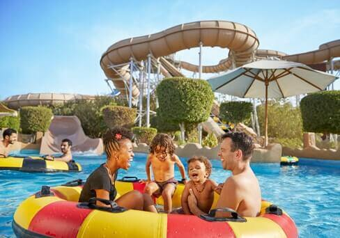Если у вас есть дети, можете не переживать по поводу того, что им будет здесь скучно, – в Бахрейне есть парки, торговые центры, картинг-клубы, аэротруба и многое другое!
Аквапарк Lost Paradise of Dilmun является первым в Бахрейне аквапарком на открытом воздухе. Неважно, любите вы кататься по крутым спускам или тихо грести в спокойной реке, этот парк подарит вам незабываемые впечатления. На сайте вы можете также найти информацию о различных выступлениях и мероприятиях.
Bahrain International Karting Circuit, принадлежащий Международному автодрому Бахрейна, предлагает лучший на Ближнем Востоке картинг и захватывающую езду на гоночных трассах для всех любителей автоспорта. Посетителям предоставлен огромный выбор развлечений, включая обучение вождению и Mini Grand Prix – своеобразную альтернативу гонки Формула-1.
В парке дикой природы Аль-Арин (Al Areen Wildlife Park and Reserve) вы сможете увидеть находящихся под угрозой исчезновения диких зверей и птиц Аравийского полуострова. Здесь находится более 50 видов млекопитающих, более 100 видов птиц и около 100 видов растений, растущих в пустыне.
Bahrain City Centre – этот торговый центр, расположенный в сердце Манамы, включает в себя более 350 международных брендов и целый ряд семейных развлечений: аквапарк, киноцентр и свыше 50 кафе и ресторанов со всего мира.
Al Aali Shopping Complex предлагает все современные удобства и удовольствия. Шопинг здесь переходит на новый уровень чистого гламура, современного шика и вечной роскоши. В торговом центре представлены известнейшие мировые и знаменитые местные модные бренды одежды, аксессуаров, сумок и обуви, ювелирных украшений, декора для дома и прочих товаров.
Moda Mall, находящийся на первом этаже Бахрейнского всемирного торгового центра (BWTC), предлагает роскошный шопинг. В нем вы найдете самое большое количество люкс-брендов от дизайнеров со всего мира: более 80 модных марок и 50 фирм ювелирных украшений тонкой работы.
Seef Mall – этот торговый центр, расположенный в районе Сиф (Seef District), отличается своей архитектурой и необычной атмосферой. Он расположен на берегу моря, откуда открывается невероятный вид, рядом с объектом всемирного наследия – фортом Арад. В Seef Mall располагается 370 аутлетов известных во всем мире модных и ювелирных брендов, два фудкорта с более 55 ресторанами, кофейнями и кафе.
The Avenues –торговый центр на набережной в Манаме, который идеально подходит для семейного отдыха. В The Avenues вы найдете множество детских площадок, беговые дорожки под открытым воздухом, спортзал, рестораны на набережной, кафе, игровые автоматы, кинотеатры и рынок.
Активный отдых
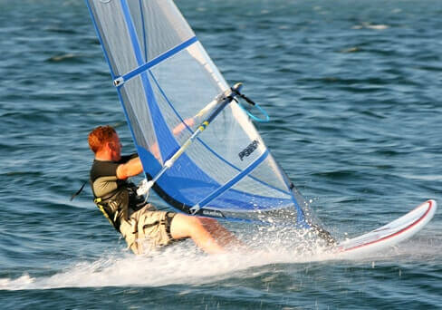Водные виды спорта
В яхт-клубах Бахрейна вы сможете заняться различными видами водного спорта: от виндсерфинга, парусного и водно-моторного спорта до кайтсерфинга, SUP серфинга и каякинга.
Любители водных видов спорта будут рады узнать, что в Бахрейне есть центр водного спортаNatural Water Sports Centre, принадлежащий компании BeachCulture. Этот центр, расположенный на островах Амвадж, является единственным центром в Бахрейне, выдающим международные сертификаты по кайтсерфингу, SUP серфингу и йоге на воде. Вы можете записаться на курсы, выбрав начинающий или продвинутый уровень. Занятия проходят как индивидуально, так и в группе. Здесь вас обучат парусному спорту, виндсерфингу и каякингу.
Тур на гидроцикле, прогулка на двухместном каяке, кайтсерфинг, катание на надувном банане – проведите день в парке Лагун или на искусственном рифе. В прекрасных голубых водах Бахрейна можно весело провести время, катаясь на гидроцикле, каяках и катамаранах. Это необычный и захватывающий способ исследовать воды Бахрейна.
Ловля жемчуга – Бахрейн давно славитсяловлей жемчуга, который является лучшим не только в заливе, но и во всем мире. Ныряльщиков опускают в воду на специальных веревках, где у них есть около минуты, чтобы собрать устрицы, а затем их поднимают. Сезон дайвинга длится чуть более трех месяцев: с июня до начала сентября.
Встреча с дельфинами – это отличное развлечение для всей путешествующей группы. Лодка отправит вас на то место, где обычно играют целые стаи дельфинов, которые, кажется, уже привыкли к посетителям – выпрыгивая из воды, дельфины всегда радостно встречают гостей.
Курорт Coral Bayнаходится на восточном побережье Манамы. Здесь есть пристань для яхт, пляж, развлекательные заведения, зона для водного спорта, роскошный SPA салон и фитнес центр, а также рестораны. Идеальное место для семейного отдыха!
Национальный музей Бахрейна и Дом Корана
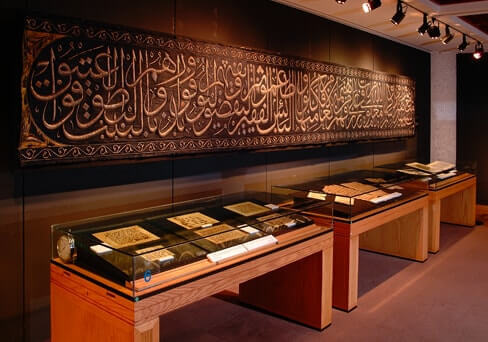Национальный музей Бахрейна
Национальный музей Бахрейна, открытый в 1988 году, является одним из старейших музеев в стране, в котором хранится огромная коллекция древних артефактов. В музее существует 6 секций и 9 главных залов, в которых представлены культурное наследие и сорок веков истории Бахрейна: от зала традиционных ремесел до залов обычаев и традиций, курганов, древних текстов и рукописей, зала Тилоса и зала исламского периода. Одной из главных целей музея является повышение качества знаний об истории Бахрейна не только у местных жителей, но и во всем мире. Более того, музей стремится развивать знания и о культуре других стран, постоянно проводя международные культурные и художественные выставки.
После исторического путешествия во времени посетители могут насладиться традиционной кухней Бахрейна и блюдами из других стран в кафе музея.
Дом Корана
Бейт Аль-Куран (Bait Al Qur’an), или в переводе с арабского «Дом Корана», является уникальным комплексом, посвященным исламской религии и культуре, которые сливаются здесь воедино под одной крышей. В комплексе хранятся различные рукописи Священного Писания разных периодов, собранные со всего исламского мира, благодаря чему можно проследить за эволюцией арабской каллиграфии и историей Корана. Здесь хранится крупнейшая в мире коллекция редких исламских рукописей и произведений искусства, выставляемая на постоянной основе. В этой коллекции представлены древнейшие рукописи Корана, включая средневековые рукописи времен становления ислама, а также личные письма важных фигур того времени. В комплекс также входит уникальный музей, посвященный исключительно Священному Писанию и произведениям искусства, вдохновением для создания которых служил Коран. Особенно поражают искусная каллиграфия и золотые орнаменты на страницах Корана и рукописей, некоторые из которых относятся к первому веку хиджры (700 г. н. э.). В музее также присутствуют древнейший экземпляр перевода Корана на латынь, который был выполнен в Швейцарии в 955 г. н. э., и найденные в Пакистане зерна риса XIV в., на которых выгравированы суры Корана. В Доме Корана также проводятся разнообразные художественные выставки, размещается небольшая мечеть, библиотека и специально отведенная под изучение ислама секция.
Ночная жизнь: самые популярные рестораны и клубы
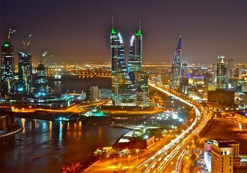В центре Манамы расположен очаровательный квартал Блок 338 (Block 338), где на каждом углу находятся рестораны, художественные галереи и бутики. Особенно Блок 338 известен своими ресторанами: здесь любой найдет себе любимое местечко, где можно вкусно поесть, будь то роскошный обед, традиционное бахрейнское блюдо или просто расслабляющий напиток. Если же вы скучаете по стейкам и бургерам или хотите морепродуктов, вам также подойдет этот гастрономический рай! Помимо восточной кухни в районе Блок 338 представлено множество других вариантов – все улицы района заставлены различными кафе и ресторанами. За годы этот полный жизни район стал любимым местом не только гурманов, но и ценителей искусства. Именно здесь находится галерея Аль-Ривак (Al Riwaq Gallery), в которой проходят выставки начинающих бахрейнских художников и мастеров из других стран. Тут также есть небольшое, но весьма популярное кафе.
7 лучших ресторанов:
Masso – этот ресторан подойдет тем, кто ведет здоровый образ жизни: здесь подают здоровую органическую еду европейской кухни. В меню вы найдете как блюда для целой компании, так и лично для себя. Здесь можно не только вкусно поесть, но и хорошо провести время.Рекомендуем попробовать: сочный говяжий стейк Рибай, тыквенные равиоли. Massorestaurant
Café Lilou – в этой пивной парижского стиля можно перекусить на террасе, откуда открывается прекрасный вид. Каждый день в меню представлено блюдо дня от шефа: коктейль, суп, салат или горячее. Рекомендуем попробовать: свежевыпеченные кондитерские изделия, свежий салат, вкуснейшие сандвичи. CafeLilou
Upstairs Downstairs - это прекрасный ресторан с утонченным дизайном в кремовых и золотых тонах. Меню сочетает в себе блюда разных стран – здесь есть и паста, и мясо на гриле, и карри. В течение всей недели в ресторане проходят шоу-программы, а по выходным здесь часто выступают местные музыканты. Рекомендуем попробовать: паста, мясо на гриле, карри, блюда французской кухни Upstairs Downstairs
Zoe – ресторан с современным интерьером, где представлена средиземноморская кухня. Ресторан подойдет для любого случая – будь то обычный ланч, деловая встреча, романтический ужин или праздник. На крыше можно полюбоваться невероятным видом на город.Рекомендуем попробовать: лосось по-мароккански с ризотто из ячменя, клэм-чаудер из белых моллюсок. ZoeBah
Mirai – в этом нестандартном японском ресторане вы можете попробовать традиционную японскую кухню с элементами классических итальянских и французских блюд.
Рекомендуем попробовать: тепаньяки с говядиной (медальоны из говядины по-японски), сашими. Mirai
Café Amsterdam – в этом кафе можно насладиться голландской и британской кухней, классическими блюдами со всех уголков мира, включая стейки, лобстеров и даже веганское меню. Интерьер кафе такой же эклектичный – тут есть зона в консервативном стиле и традиционная столовая, а на верхнем этаже вы найдете спорт-бар.
Рекомендуем попробовать: севиче из тунца, грибные шарики, тако, жареный сибас, хлебный пудинг Martini. Cafe Amsterdam
The Foundry – это американское бистро одно из новейших и самых популярных мест в городе. Если вы ищете идеальное соотношение цены и качества, то вам точно здесь понравится. Интерьер бистро, выполненный в промышленном стиле, стал одной из причин быстрорастущей популярности этого места – красные кирпичные стены, металлические брусья и кожаные стулья напомнят вам нью-йоркскую квартиру в стиле лофт.
Рекомендуем попробовать: жареный цыпленок, стейк Рибай, сильно прожаренный сыр с халапеньо, копченый лосось, мидии, коктейль Том-ям, коктейль «Московский мул». The Foundry
Лучшие ночные клубы и лаунжы Манамы
Международный автодром Бахрейна и расписание гонок Формулы-1 на 2018 – 2020 гг.
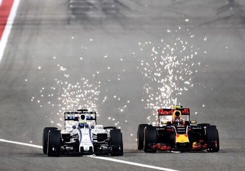Путешествие в королевство Бахрейн нельзя считать завершенным, пока вы не посетите новейшую в мире площадку для гонок – Международный автодром Бахрейна (BIC), который расположен в сердце пустыни Сахир. Международный автодром Бахрейна имеет пять трасс, сертифицированных Международной автомобильной федерацией (FIA), – это больше, чем в любой другой стране. На трассе длинной в 5,412 километров регулярно проводятся международные гонки, включая Гран-при Бахрейна в классе Формула-1 и Чемпионат мира по автогонкам на выносливость «6 часов Бахрейна», а также гонки Серии GP2 и Суперкубок Порше.
Дневной тур предлагает посетителям побывать за кулисами Международного автодрома Бахрейна и даже сделать круг по знаменитой трассе! Ежегодный Гран-при Бахрейна в классе Формула-1 является ведущим в мире чемпионатом по автоспорту и любимым среди самих гонщиков, их команд и фанатов со всего мира.
Bahrain International Karting Circuit, принадлежащий Международному автодрому Бахрейна, предлагает лучший на Ближнем Востоке картинг и захватывающую езду на гоночных трассах для всех любителей автоспорта. Здесь вы найдете огромный выбор развлечений, включая обучение вождению и Mini Grand Prix – своеобразную альтернативу Формулы-1.
Если вы ищите приключений, 4X4 Extreme Adventure Tour – то, что вам нужно. Садитесь в Land Rover вместе с квалифицированным водителем ралли и отправляйтесь в захватывающее путешествие на внедорожнике по пустыням Международного автодрома Бахрейна. По пути вы столкнетесь с 30 препятствиями, созданными специально для тестирования ведущих мировых автомобилей 4X4. Некоторые названия преград говорят сами за себя: Скалистая дорога, Верблюжьи горбы, Подъем бумеранга.
Мухаррак: старые дома и рынок аль-Кайсария
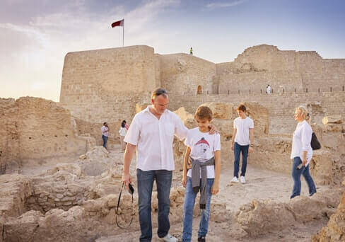Город Мухаррак, который раньше был столицей, славится своей культурой и традиционными домами Бахрейна, расположенными в узких переулках города. Самым ярким примером исламской архитектуры Бахрейна является дворец шейха Исы бин Али. Это дом с красивыми резными деревянными дверями и гипсовыми панелями, который имеет при себе четыре двора. Отреставрированные дома Бахрейна, входящие в состав Культурного и исследовательского центра шейха Эбрахима, имеют особое историческое и культурное значение. Лекционный зал шейха Эбрахима, детская библиотека Икра (Iqra Children’s Library), музей декоративно-прикладного искусства Хераф аль-ящ (Heraf al Diyar), Дом Нухида (Nukhida House), Дом Курар (Kurar House), Дом Абдулла аль-Заед (Abdullah al Zayed House), Дом кофе (House of Coffee), Дом Бин Матар (Bin Matar House), Дом Бу Забун (Bu Zaboon House) и Дом Мухаммед бин Фарис (Mohammed Bin Faris House) – все эти дома Центра представляют различные аспекты богатого наследия Бахрейна. От Дома вышивки Курар до бывшего дома знаменитого торговца жемчугом Бин Матара, здания Центра шейха Эбрахима отражают как традиционную архитектуру, так и историю Бахрейна. В двух шагах от Центра шейха Эбрахима находится еще один яркий пример традиционных домов Бахрейна – расположенный в старом городе Дом Джамшир (Maison Jamsheer), где регулярно проводятся художественные выставки и кинопоказы.
Рынок аль-Кайсария (al Qaisariya souq) – это одна из старейших секций рынка Мухаррак, где можно совершить приятный шопинг. В настоящее время Министерство культуры проводит здесь реставрационные работы. Первый этап строительства уже завершен – реконструированы магазины, в которых продаются различные товары от жемчуга до пряностей и чая, а также традиционное кафе Zaafaran, расположенное рядом с историческими медресе, мусульманскими учебными заведениями.
С древних времен Бахрейн славился своим натуральным жемчугом, который был высоко востребован из-за своего уникального цвета и необычного блеска – это результат сочетания молодых водорослей и соленого моря. В Бахрейне запрещена торговля искусственно выращенным жемчугом, поэтому каждая купленная здесь жемчужина имеет сертификат подлинности. Рынок аль-Кайсария является неотъемлемой частью проекта «Жемчужный промысел, свидетельство острова». В Бахрейне предлагается исследовать историю жемчужного промысла, пройдя по целой трассе – Бахрейнскому жемчужному пути – длиной примерно в 3,5 км. Включенный в список Всемирного наследия ЮНЕСКО, этот путь от пляжа до старого дома известного бахрейнского торговца в красках рассказывает посетителям историю острова и его обитателей.